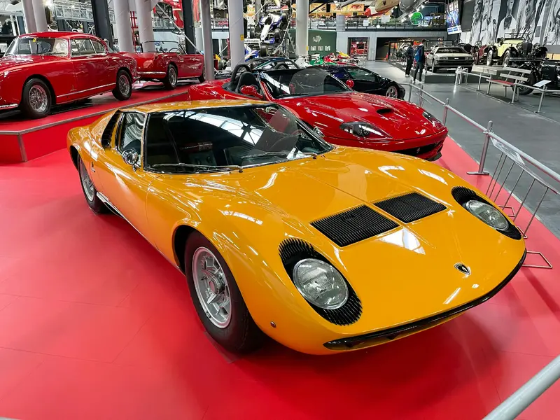

12. Lamborghini Miura
The Lamborghini Miura is considered the first-ever supercar with a high-revving V12 in a rear mid-engine configuration...
Published on: May 23, 1993
The Lamborghini Miura is considered the first-ever supercar with a high-revving V12 in a rear mid-engine configuration...

After a positive reception at GM’s Motorama show in January 1953, the Chevrolet Corvette was quickly put into production...

Cadillac’s 1959 lineup is easily one of the most recognizable classic cars ever built...
In stark contrast to the big-finned Cadillacs, the 1961-65 Lincoln Continental is more subtly eye-catching...

Thanks to its status as James Bond’s vehicle of choice, the Aston Martin DB5 (1963-65) might be the most popular car...

The success of the classic Ford Mustang is well documented. It changed the way Americans bought cars...

Porsche’s iconic 911 was launched in 1964, but the turbocharged 930 debuted in 1975 and became a sports car legend...

Pontiac is often credited with sparking the muscle car wars, but the 1970-74 Plymouth Hemi ‘Cuda is the ultimate muscle car...
Often regarded as one of the most beautiful cars ever created, the Jaguar E-Type from 1961-74 is an evolution of the D-Type...
The 1954-57 Mercedes-Benz 300SL is one of the most recognizable cars with its iconic gullwing doors...
The Shelby Cobra was built from 1962 to 1967, created by Carroll Shelby with a Ford engine powering a British roadster...
The Ferrari 250 GTO is known for speed, beauty, and exclusivity. Only 36 cars were built, and they command high auction prices...